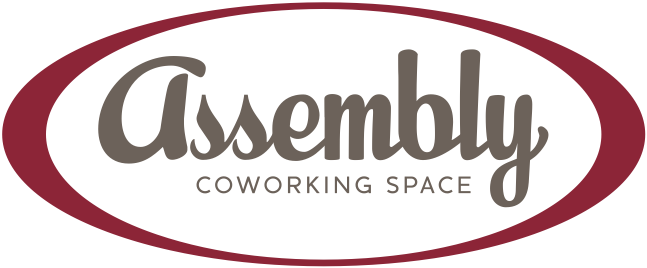

Using Python to extend ArcMap for grizzly bear habitat mapping
Daniel Wismer
ArtsMan

Please let us know if you’re interested in sponsoring / have suggestions for possible sponsors
Sunday, June 2
Did anyone go? How was it?
1-year subscription
or AppCode, CLion, DataGrip, GoLand, IntelliJ IDEA Ultimate, PhpStorm, ReSharper, Rider, RubyMine, or WebStorm
“in order to continue receiving free coupons … winners [need to] actively redeem their free licenses”
dir() / help() / docstrings>>> h = 'hello'
>>> dir(h)
['__add__', '__class__', '__contains__', '__delattr__', '__dir__',
'__doc__', '__eq__', '__format__', '__ge__', '__getattribute__',
'__getitem__', '__getnewargs__', '__gt__', '__hash__', '__init__',
'__init_subclass__', '__iter__', '__le__', '__len__', '__lt__', '__mod__',
'__mul__', '__ne__', '__new__', '__reduce__', '__reduce_ex__', '__repr__',
'__rmod__', '__rmul__', '__setattr__', '__sizeof__', '__str__',
'__subclasshook__', 'capitalize', 'casefold', 'center', 'count', 'encode',
'endswith', 'expandtabs', 'find', 'format', 'format_map', 'index',
'isalnum', 'isalpha', 'isascii', 'isdecimal', 'isdigit', 'isidentifier',
'islower', 'isnumeric', 'isprintable', 'isspace', 'istitle', 'isupper',
'join', 'ljust', 'lower', 'lstrip', 'maketrans', 'partition', 'replace',
'rfind', 'rindex', 'rjust', 'rpartition', 'rsplit', 'rstrip', 'split',
'splitlines', 'startswith', 'strip', 'swapcase', 'title', 'translate',
'upper', 'zfill']help()>>> help(h.rjust)
Help on built-in function rjust:
rjust(width, fillchar=' ', /) method of builtins.str instance
Return a right-justified string of length width.
Padding is done using the specified fill character (default is a space).
>>> h.rjust(20)
' hello'def dir2(o):
"Return a list of attributes not inherited from the `object` class"
return sorted(list(set(dir(o)) - set(dir(object))))>>> help(dir2)
Help on function dir2 in module __main__:
dir2(o)
Return a list of attributes not inherited from the `object` classGenerate fake data for testing, demos, …
>>> from faker import Faker
>>> fake = Faker()
>>> dir(fake)
...
'day_of_month', 'day_of_week', 'domain_name', 'domain_word', 'ean',
...
'internet_explorer', 'ipv4', 'ipv4_network_class', 'ipv4_private',
...
'random_digit_not_null', 'random_digit_not_null_or_empty',
...
'randomize_nb_elements', 'rgb_color', 'rgb_css_color', 'safari',
...
'sha256', 'simple_profile', 'slug', 'ssn', 'state', 'state_abbr',
...>>> fake.name()
'Michele Young'
>>> fake.street_address()
'6817 Christopher Freeway Suite 090'
>>> fake.city()
'West Patriciaburgh'
>>> fake.date()
'1996-01-07'
>>> fake.credit_card_number()
'6545329796505156'
>>> fake.catch_phrase()
'Front-line human-resource artificial intelligence'
...there are many, many more options
Break until September
Looking for sponsors
Looking for organizers